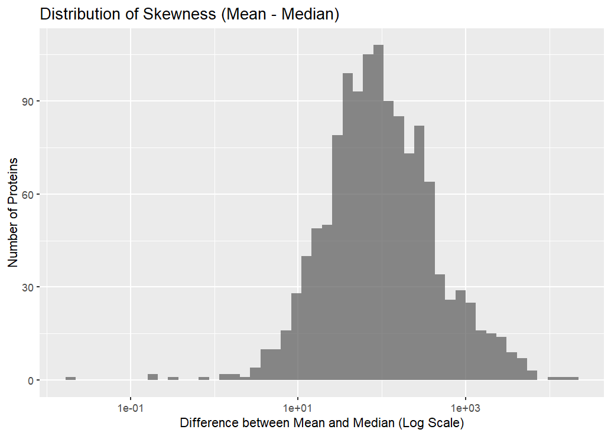
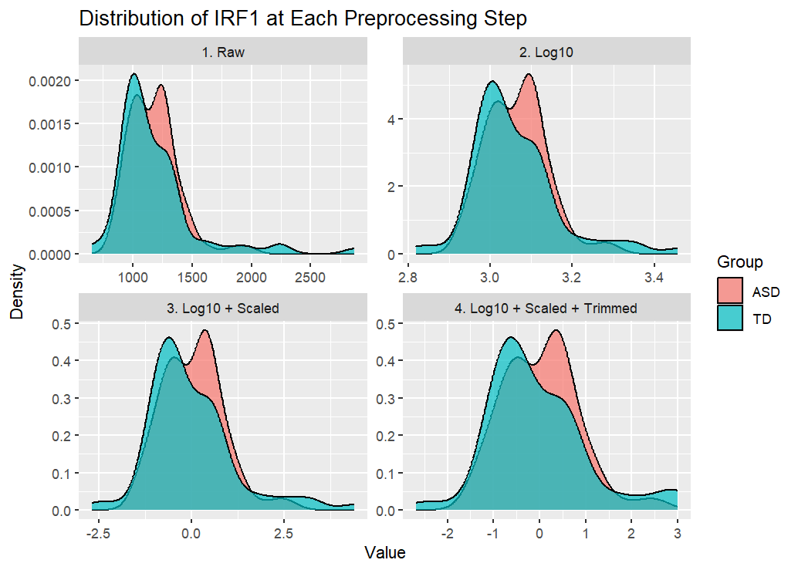
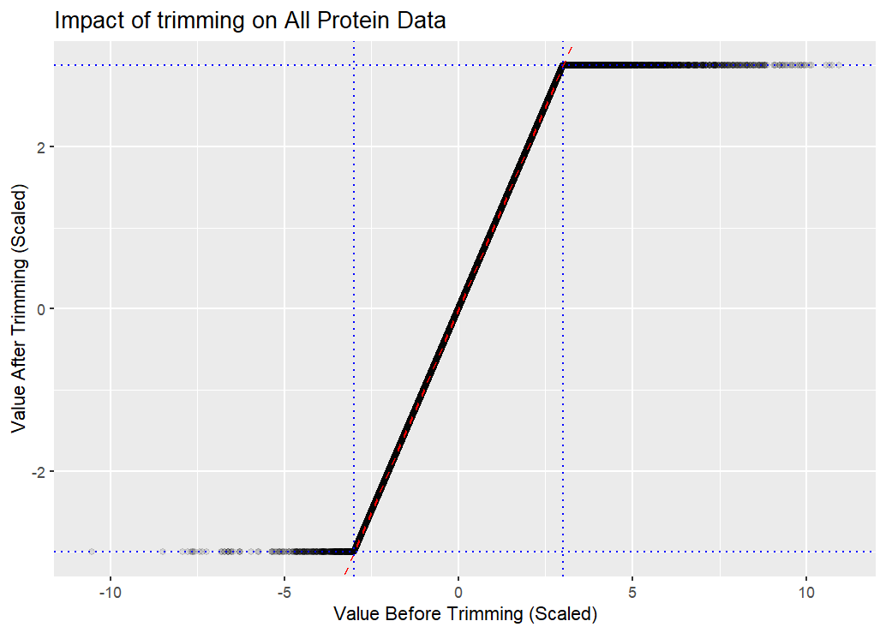

Biomarkers of ASD
If you want a subtitle put it here
Use this as a template. Keep the headers and remove all other text. In all, your report can be quite short. When it is complete, render and then push changes to your team repository.
Abstract
Write a brief one-paragraph abstract that describes the contents of your write-up.
Dataset
Write a brief data description, including: how data were obtained; sample characteristics; variables measured; and data preprocessing. This can be largely based on the source paper and should not exceed 1-2 paragraphs.
The data came from serum samples collected from 154 male children, including 76 diagnosed with autism spectrum disorder and 78 typically developing controls, within ages 18 months old to 8 years old. Blood samples were analyzed using a multiplex proteomic assay that quantified 1,317 proteins. After quality control, 1,125 proteins were retained for statistical analysis. The data set also included variables such as age, comorbidities, medication, and behavioral measures of ASD symptoms. As for the preprocessing, the authors performed log-transformation, centering and scaling of protein concentrations, and trimming of outliers. Ultimately, this data set identified proteins that showed different expressions between ASD and TD groups. It also helped with building predictive models of ASD classification.
Summary of published analysis
Summarize the methodology of the paper in 1-3 paragraphs. You need not explain the methods in depth as we did in class; just indicate what methods were used and how they were combined. If possible, include a diagram that depicts the methodological design. (Quarto has support for GraphViz and Mermaid flowcharts.) Provide key results: the proteins selected for the classifier and the estimated accuracy.
Task 4 We evaluated two machine learning approaches for classifying participants as ASD or TD based on blood protein biomarkers. Using the cleaned data set, we first split the data into training (80%) and testing (20%) subsets. A LASSO Logistic Regression Model was implemented through the tidymodels framework, with five-fold cross-validation used to tune the penalty parameter (lambda) to balance model simplicity and predictive accuracy. The LASSO Model applies regularization to shrink less informative protein coefficients toward zero, thereby identifying a smaller “core” biomarker panel. In parallel, an Improved Random Forest model with 1,000 trees was trained using the same training data to serve as a non-linear benchmark. Both models were evaluated on the test set using standard classification metrics: accuracy, sensitivity, specificity, and ROC AUC, to assess their predictive performance and compare model efficiency versus complexity.
Findings
Summarize your findings here. I’ve included some subheaders in a way that seems natural to me; you can structure this section however you like.
Impact of preprocessing and outliers
Here is a more thorough write-up for that section. You can copy and paste this directly into your report.qmd file.
Impact of preprocessing and outliers
The data preprocessing steps, defined in scripts/preprocessing.R, transform the data to make it suitable for modeling. They correct for outliers and data skew.
Outlier Problem
The outliers problem is shown in Figure 1, which plots the distribution of the mean - median difference for all 1,125 proteins. In a symmetrical distribution, the mean and median are nearly identical, so their difference would be close to 0. However, Figure 1 shows that for the vast majority of proteins, the mean is significantly larger than the median. For example, there are more than 100 proteins whose means are \(10^2\) (100) points higher than their medians, since the x-axis is on a log scale. This indicates a right-skew across the whole dataset. These outliers make the raw data distributions uninterpretable and would violate the assumptions of many statistical models.

Preprocessing Steps
The preprocessing pipeline provided in preprocessing.R addresses this problem in steps. We picked protein IRF1 to Figure 2 visualizes the effect of each step on the IRF1 protein:
- Raw: The data in this plot is so skewed by outliers that the entire distribution is at the far left, and the x-axis is stretched out.
- Log10: The
log10()transformation pulls in the extreme high-value outliers, transforming the heavily skewed data into a more symmetric distribution. The x-axis is now in log-space and the underlying structure of the data for the two groups (ASD vs. TD) is visible.
- Log10: The
- Log10 + Scaled: This step applies a standard
scale()(centering and scaling) to the log-transformed data. The shape of the distribution is identical to Panel 2, but the x-axis is now centered around 0 and in units of standard deviation. The scaling allows all proteins to be comparable and prepares for the trimming step.
- Log10 + Scaled: This step applies a standard
- Log10 + Scaled + Trimmed: This plot shows the final data after applying the
trim()function. For this specific protein, the distribution looks virtually identical to Panel 3, suggesting that few IRF1 data points were outside the trim threshold.
- Log10 + Scaled + Trimmed: This plot shows the final data after applying the

Preprocessing: Trimming
The trim() function is the final outlier-handling step, which caps all scaled values at an absolute threshold of 3. While its effect on the shape of the IRF1 distribution in Figure 1 was minimal, its impact across the entire dataset is significant.
Figure 3 plots the “before” vs. “after” value for every single protein measurement in the dataset.
The dense cluster of points along the red dashed \(y=x\) line represents the vast majority of data points that were unaffected because their scaled values were already between -3 and 3.
The horizontal line of points at \(y = 3\) shows all the high-value outliers. Their original scaled values on the x-axis ranged from 3 to over 10, but the
trim()function pulled them down and capped their final value at exactly 3.Similarly, the horizontal line at \(y = -3\) shows the low-value outliers that were pushed up and capped at -3.

By calculating the total data points and the data points trimmed, we got that the trimming function was applied to 2,379 data points, which is 1.173% of the total dataset. This shows the substantial impact of the trimming step in the preprocessing pipeline.
In conclusion, the preprocessing pipeline uses a log-transformation to correct for severe biological skew, scales the log-transformed data, and then applies a trimming function to remove the most extreme values. This ensures the final data is robust and suitable for modeling.
Methodological variations
Task 3
Improved classifier
Task 4 Both LASSO and Improved Random Forest models were evaluated on their ability to distinguish between ASD and TD participants using the biomarker data set. The Simpler LASSO panel achieved a higher ROC AUC value of 0.917, compared to 0.829 for the Improved Random Forest model, indicating that the LASSO classifier was better at ranking ASD cases above TD cases overall. The Random Forest achieved an accuracy of 0.774, with sensitivity equal to 0.667 and specificity equal to 0.875, showing that it correctly identified most TD cases but missed a portion of ASD cases. In contrast, the LASSO model produced a smoother ROC curve with superior area under the curve, demonstrating stronger discriminative ability despite relying on fewer proteins. Overall, this suggests that the LASSO approach not only simplifies the biomarker panel but also improves classification accuracy relative to both the Random Forest and the original in-class model.